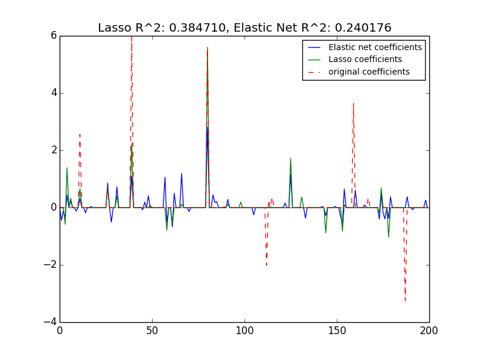

Lasso and Elastic Net for Sparse Signals¶
Estimates Lasso and Elastic-Net regression models on a manually generated sparse signal corrupted with an additive noise. Estimated coefficients are compared with the ground-truth.
Script output:
Lasso(alpha=0.1, copy_X=True, fit_intercept=True, max_iter=1000,
normalize=False, positive=False, precompute=auto, tol=0.0001,
warm_start=False)
r^2 on test data : 0.384710
ElasticNet(alpha=0.1, copy_X=True, fit_intercept=True, l1_ratio=0.7,
max_iter=1000, normalize=False, positive=False, precompute=auto,
rho=None, tol=0.0001, warm_start=False)
r^2 on test data : 0.240176
Python source code: plot_lasso_and_elasticnet.py
print(__doc__)
import numpy as np
import pylab as pl
from sklearn.metrics import r2_score
###############################################################################
# generate some sparse data to play with
np.random.seed(42)
n_samples, n_features = 50, 200
X = np.random.randn(n_samples, n_features)
coef = 3 * np.random.randn(n_features)
inds = np.arange(n_features)
np.random.shuffle(inds)
coef[inds[10:]] = 0 # sparsify coef
y = np.dot(X, coef)
# add noise
y += 0.01 * np.random.normal((n_samples,))
# Split data in train set and test set
n_samples = X.shape[0]
X_train, y_train = X[:n_samples / 2], y[:n_samples / 2]
X_test, y_test = X[n_samples / 2:], y[n_samples / 2:]
###############################################################################
# Lasso
from sklearn.linear_model import Lasso
alpha = 0.1
lasso = Lasso(alpha=alpha)
y_pred_lasso = lasso.fit(X_train, y_train).predict(X_test)
r2_score_lasso = r2_score(y_test, y_pred_lasso)
print(lasso)
print("r^2 on test data : %f" % r2_score_lasso)
###############################################################################
# ElasticNet
from sklearn.linear_model import ElasticNet
enet = ElasticNet(alpha=alpha, l1_ratio=0.7)
y_pred_enet = enet.fit(X_train, y_train).predict(X_test)
r2_score_enet = r2_score(y_test, y_pred_enet)
print(enet)
print("r^2 on test data : %f" % r2_score_enet)
pl.plot(enet.coef_, label='Elastic net coefficients')
pl.plot(lasso.coef_, label='Lasso coefficients')
pl.plot(coef, '--', label='original coefficients')
pl.legend(loc='best')
pl.title("Lasso R^2: %f, Elastic Net R^2: %f"
% (r2_score_lasso, r2_score_enet))
pl.show()
Total running time of the example: 0.11 seconds ( 0 minutes 0.11 seconds)